Table of Contents
7. Sampling
7.1. Populations and Samples
7.1.1. Populations
7.1.2. Samples
7.1.3. Random Sampling
7.1.4. Random Assignment of Subjects
7.1.5. Surveys or Experiments?
7.2. Populations and Samples
7.3. Sample Surveys
7.3.1. The Literary Digest Poll
7.3.2. The Year the Polls Elected Dewey
7.3.3. Using Chance in Survey Work
7.3.4. How Well Do Probability Methods Work?
7.3.5. The Gallup Poll
7.3.6. Telephone Surveys
7.3.7. Chance Error and Bias
7.5. Sampling Distributions
7.5.1. What Is a Sampling Distribution?
7.5.2. Properties of Sampling Distributions
7.5.3. Creating a Sampling Distribution
7.5.4. Continuous Sampling Distributions
7.5.5. Mean of All Sample Means (μ x)
7.5.6. Shapes of Sampling Distributions
7.5.7. Sampling Distributions and the Central Limit Theorem
7.6. Errors in Sampling
7.6.1. Expected Value and Standard Error
7.6.2. Using the Normal Curve
7.6.3. The Correction Factor
7.6.4. A Closer Look at the Gallup Poll
7.7. Sampling Examples
7.7.1. Measuring Unemployment
7.7.2. Chance Models in Genetics
7. Sampling
7.1. Populations and Samples
7.1.1. Populations
In statistics, a population includes all members of a defined group that we are studying for data driven decisions.
Learning Objective
Give examples of a statistical populations and sub-populations
Key Points
- It is often impractical to study an entire population, so we often study a sample from that population to infer information about the larger population as a whole.
- Sometimes a government wishes to try to gain information about all the people living within an area with regard to gender, race, income, and religion. This type of information gathering over a whole population is called a census.
- A subset of a population is called a sub-population.
Key Terms
- heterogeneous
- diverse in kind or nature; composed of diverse parts
- sample
- a subset of a population selected for measurement, observation, or questioning to provide statistical information about the population
Populations
When we hear the word population, we typically think of all the people living in a town, state, or country. This is one type of population. In statistics, the word takes on a slightly different meaning.
A statistical population is a set of entities from which statistical inferences are to be drawn, often based on a random sample taken from the population. For example, if we are interested in making generalizations about all crows, then the statistical population is the set of all crows that exist now, ever existed, or will exist in the future. Since in this case and many others it is impossible to observe the entire statistical population, due to time constraints, constraints of geographical accessibility, and constraints on the researcher's resources, a researcher would instead observe a statistical sample from the population in order to attempt to learn something about the population as a whole.
Sometimes a government wishes to try to gain information about all the people living within an area with regard to gender, race, income, and religion. This type of information gathering over a whole population is called a census .
{kind=link}
This is the logo for the Bureau of the Census in the United States.
Sub-Populations
A subset of a population is called a sub-population. If different sub-populations have different properties, so that the overall population is heterogeneous, the properties and responses of the overall population can often be better understood if the population is first separated into distinct sub-populations. For instance, a particular medicine may have different effects on different sub-populations, and these effects may be obscured or dismissed if such special sub-populations are not identified and examined in isolation.
Similarly, one can often estimate parameters more accurately if one separates out sub-populations. For example, the distribution of heights among people is better modeled by considering men and women as separate sub-populations.
7.1.2. Samples
A sample is a set of data collected and/or selected from a population by a defined procedure.
Learning Objective
Differentiate between a sample and a population
Key Points
- A complete sample is a set of objects from a parent population that includes all such objects that satisfy a set of well-defined selection criteria.
- An unbiased (representative) sample is a set of objects chosen from a complete sample using a selection process that does not depend on the properties of the objects.
- A random sample is defined as a sample where each individual member of the population has a known, non-zero chance of being selected as part of the sample.
Key Terms
- census
- an official count of members of a population (not necessarily human), usually residents or citizens in a particular region, often done at regular intervals
- population
- a group of units (persons, objects, or other items) enumerated in a census or from which a sample is drawn
- unbiased
- impartial or without prejudice
What is a Sample?
In statistics and quantitative research methodology, a data sample is a set of data collected and/or selected from a population by a defined procedure.
Typically, the population is very large, making a census or a complete enumeration of all the values in the population impractical or impossible. The sample represents a subset of manageable size. Samples are collected and statistics are calculated from the samples so that one can make inferences or extrapolations from the sample to the population. This process of collecting information from a sample is referred to as sampling.
Types of Samples
A complete sample is a set of objects from a parent population that includes all such objects that satisfy a set of well-defined selection criteria. For example, a complete sample of Australian men taller than 2 meters would consist of a list of every Australian male taller than 2 meters. It wouldn't include German males, or tall Australian females, or people shorter than 2 meters. To compile such a complete sample requires a complete list of the parent population, including data on height, gender, and nationality for each member of that parent population. In the case of human populations, such a complete list is unlikely to exist, but such complete samples are often available in other disciplines, such as complete magnitude-limited samples of astronomical objects.
An unbiased (representative) sample is a set of objects chosen from a complete sample using a selection process that does not depend on the properties of the objects. For example, an unbiased sample of Australian men taller than 2 meters might consist of a randomly sampled subset of 1% of Australian males taller than 2 meters. However, one chosen from the electoral register might not be unbiased since, for example, males aged under 18 will not be on the electoral register. In an astronomical context, an unbiased sample might consist of that fraction of a complete sample for which data are available, provided the data availability is not biased by individual source properties.
The best way to avoid a biased or unrepresentative sample is to select a random sample, also known as a probability sample. A random sample is defined as a sample wherein each individual member of the population has a known, non-zero chance of being selected as part of the sample. Several types of random samples are simple random samples, systematic samples, stratified random samples, and cluster random samples.
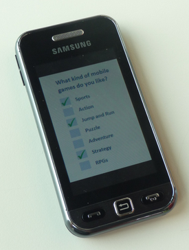{kind=link}
Online and phone-in polls produce biased samples because the respondents are self-selected. In self-selection bias, those individuals who are highly motivated to respond-- typically individuals who have strong opinions-- are over-represented, and individuals who are indifferent or apathetic are less likely to respond.
A sample that is not random is called a non-random sample, or a non-probability sampling. Some examples of nonrandom samples are convenience samples, judgment samples, and quota samples.
7.1.3. Random Sampling
A random sample, also called a probability sample, is taken when each individual has an equal probability of being chosen for the sample.
Learning Objective
Categorize a random sample as a simple random sample, a stratified random sample, a cluster sample, or a systematic sample
Key Points
- A simple random sample (SRS) of size $n$ consists of $n$ individuals from the population chosen in such a way that every set on $n$ individuals has an equal chance of being in the selected sample.
- Stratified sampling occurs when a population embraces a number of distinct categories and is divided into sub-populations, or strata. At this stage, a simple random sample would be chosen from each stratum and combined to form the full sample.
- Cluster sampling divides the population into groups, or clusters. Some of these clusters are randomly selected. Then, all the individuals in the chosen cluster are selected to be in the sample.
- Systematic sampling relies on arranging the target population according to some ordering scheme and then selecting elements at regular intervals through that ordered list.
Key Terms
- stratum
- a category composed of people with certain similarities, such as gender, race, religion, or even grade level
- population
- a group of units (persons, objects, or other items) enumerated in a census or from which a sample is drawn
- cluster
- a significant subset within a population
Simple Random Sample (SRS)
There is a variety of ways in which one could choose a sample from a population. A simple random sample (SRS) is one of the most typical ways. Also commonly referred to as a probability sample, a simple random sample of size n consists of n individuals from the population chosen in such a way that every set of n individuals has an equal chance of being in the selected sample. An example of an SRS would be drawing names from a hat. An online poll in which a person is asked to given their opinion about something is not random because only those people with strong opinions, either positive or negative, are likely to respond. This type of poll doesn't reflect the opinions of the apathetic .
{kind=link}
Online and phone-in polls also produce biased samples because the respondents are self-selected. In self-selection bias, those individuals who are highly motivated to respond-- typically individuals who have strong opinions-- are over-represented, and individuals who are indifferent or apathetic are less likely to respond.
Simple random samples are not perfect and should not always be used. They can be vulnerable to sampling error because the randomness of the selection may result in a sample that doesn't reflect the makeup of the population. For instance, a simple random sample of ten people from a given country will on average produce five men and five women, but any given trial is likely to over-represent one sex and under-represent the other. Systematic and stratified techniques, discussed below, attempt to overcome this problem by using information about the population to choose a more representative sample.
In addition, SRS may also be cumbersome and tedious when sampling from an unusually large target population. In some cases, investigators are interested in research questions specific to subgroups of the population. For example, researchers might be interested in examining whether cognitive ability as a predictor of job performance is equally applicable across racial groups. SRS cannot accommodate the needs of researchers in this situation because it does not provide sub-samples of the population. Stratified sampling, which is discussed below, addresses this weakness of SRS.
Stratified Random Sample
When a population embraces a number of distinct categories, it can be beneficial to divide the population in sub-populations called strata. These strata must be in some way important to the response the researcher is studying. At this stage, a simple random sample would be chosen from each stratum and combined to form the full sample.
For example, let's say we want to sample the students of a high school to see what type of music they like to listen to, and we want the sample to be representative of all grade levels. It would make sense to divide the students into their distinct grade levels and then choose an SRS from each grade level. Each sample would be combined to form the full sample.
Cluster Sample
Cluster sampling divides the population into groups, or clusters. Some of these clusters are randomly selected. Then, all the individuals in the chosen cluster are selected to be in the sample. This process is often used because it can be cheaper and more time-efficient.
For example, while surveying households within a city, we might choose to select 100 city blocks and then interview every household within the selected blocks, rather than interview random households spread out over the entire city.
Systematic Sample
Systematic sampling relies on arranging the target population according to some ordering scheme and then selecting elements at regular intervals through that ordered list. Systematic sampling involves a random start and then proceeds with the selection of every $k$th element from then onward. In this case, $k = \frac{\text{population size}}{\text{sample size}}$ . It is important that the starting point is not automatically the first in the list, but is instead randomly chosen from within the first to the $k$th element in the list. A simple example would be to select every 10th name from the telephone directory (an 'every 10th' sample, also referred to as 'sampling with a skip of 10').
7.1.4. Random Assignment of Subjects
Random assignment helps eliminate the differences between the experimental group and the control group.
Learning Objective
Discover the importance of random assignment of subjects in experiments
Key Points
- Researchers randomly assign participants in a study to either the experimental group or the control group. Dividing the participants randomly reduces group differences, thereby reducing the possibility that confounding factors will influence the results.
- By randomly assigning subjects to groups, researchers are able to feel confident that the groups are the same in terms of all variables except the one which they are manipulating.
- A randomly assigned group may statistically differ from the mean of the overall population, but this is rare.
- Random assignment became commonplace in experiments in the late 1800s due to the influence of researcher Charles S. Peirce.
Key Terms
- null hypothesis
- A hypothesis set up to be refuted in order to support an alternative hypothesis; presumed true until statistical evidence in the form of a hypothesis test indicates otherwise.
- control
- a separate group or subject in an experiment against which the results are compared where the primary variable is low or nonexistence
Importance of Random Assignment
When designing controlled experiments, such as testing the effects of a new drug, statisticians often employ an experimental design, which by definition involves random assignment. Random assignment, or random placement, assigns subjects to treatment and control (no treatment) group(s) on the basis of chance rather than any selection criteria. The aim is to produce experimental groups with no statistically significant characteristics prior to the experiment so that any changes between groups observed after experimental activities have been completed can be attributed to the treatment effect rather than to other, pre-existing differences among individuals between the groups.
{kind=link}
Take identical growing plants, randomly assign them to two groups, and give fertilizer to one of the groups. If there are differences between the fertilized plant group and the unfertilized "control" group, these differences may be due to the fertilizer.
In experimental design, random assignment of participants in experiments or treatment and control groups help to ensure that any differences between or within the groups are not systematic at the outset of the experiment. Random assignment does not guarantee that the groups are "matched" or equivalent; only that any differences are due to chance.
Random assignment is the desired assignment method because it provides control for all attributes of the members of the samples—in contrast to matching on only one or more variables—and provides the mathematical basis for estimating the likelihood of group equivalence for characteristics one is interested in, both for pretreatment checks on equivalence and the evaluation of post treatment results using inferential statistics.
Random Assignment Example
Consider an experiment with one treatment group and one control group. Suppose the experimenter has recruited a population of 50 people for the experiment—25 with blue eyes and 25 with brown eyes. If the experimenter were to assign all of the blue-eyed people to the treatment group and the brown-eyed people to the control group, the results may turn out to be biased. When analyzing the results, one might question whether an observed effect was due to the application of the experimental condition or was in fact due to eye color.
With random assignment, one would randomly assign individuals to either the treatment or control group, and therefore have a better chance at detecting if an observed change were due to chance or due to the experimental treatment itself.
If a randomly assigned group is compared to the mean, it may be discovered that they differ statistically, even though they were assigned from the same group. To express this same idea statistically--if a test of statistical significance is applied to randomly assigned groups to test the difference between sample means against the null hypothesis that they are equal to the same population mean (i.e., population mean of differences = 0), given the probability distribution, the null hypothesis will sometimes be "rejected"--that is, deemed implausible. In other words, the groups would be sufficiently different on the variable tested to conclude statistically that they did not come from the same population, even though they were assigned from the same total group. In the example above, using random assignment may create groups that result in 20 blue-eyed people and 5 brown-eyed people in the same group. This is a rare event under random assignment, but it could happen, and when it does, it might add some doubt to the causal agent in the experimental hypothesis.
History of Random Assignment
Randomization was emphasized in the theory of statistical inference of Charles S. Peirce in "Illustrations of the Logic of Science" (1877–1878) and "A Theory of Probable Inference" (1883). Peirce applied randomization in the Peirce-Jastrow experiment on weight perception. Peirce randomly assigned volunteers to a blinded, repeated-measures design to evaluate their ability to discriminate weights. His experiment inspired other researchers in psychology and education, and led to a research tradition of randomized experiments in laboratories and specialized textbooks in the nineteenth century.
7.1.5. Surveys or Experiments?
Surveys and experiments are both statistical techniques used to gather data, but they are used in different types of studies.
Learning Objective
Distinguish between when to use surveys and when to use experiments
Key Points
- A survey is a technique that involves questionnaires and interviews of a sample population with the intention of gaining information, such as opinions or facts, about the general population.
- An experiment is an orderly procedure carried out with the goal of verifying, falsifying, or establishing the validity of a hypothesis.
- A survey would be useful if trying to determine whether or not people would be interested in trying out a new drug for headaches on the market. An experiment would test the effectiveness of this new drug.
Key Term
- placebo
- an inactive substance or preparation used as a control in an experiment or test to determine the effectiveness of a medicinal drug
What is a Survey?
Survey methodology involves the study of the sampling of individual units from a population and the associated survey data collection techniques, such as questionnaire construction and methods for improving the number and accuracy of responses to surveys.
Statistical surveys are undertaken with a view towards making statistical inferences about the population being studied, and this depends strongly on the survey questions used. Polls about public opinion, public health surveys, market research surveys, government surveys, and censuses are all examples of quantitative research that use contemporary survey methodology to answers questions about a population. Although censuses do not include a "sample," they do include other aspects of survey methodology, like questionnaires, interviewers, and nonresponse follow-up techniques. Surveys provide important information for all kinds of public information and research fields, like marketing research, psychology, health, and sociology.
Since survey research is almost always based on a sample of the population, the success of the research is dependent on the representativeness of the sample with respect to a target population of interest to the researcher.
What is an Experiment?
An experiment is an orderly procedure carried out with the goal of verifying, falsifying, or establishing the validity of a hypothesis. Experiments provide insight into cause-and-effect by demonstrating what outcome occurs when a particular factor is manipulated. Experiments vary greatly in their goal and scale, but always rely on repeatable procedure and logical analysis of the results in a method called the scientific method . A child may carry out basic experiments to understand the nature of gravity, while teams of scientists may take years of systematic investigation to advance the understanding of a phenomenon. Experiments can vary from personal and informal (e.g. tasting a range of chocolates to find a favorite), to highly controlled (e.g. tests requiring a complex apparatus overseen by many scientists that hope to discover information about subatomic particles). Uses of experiments vary considerably between the natural and social sciences.
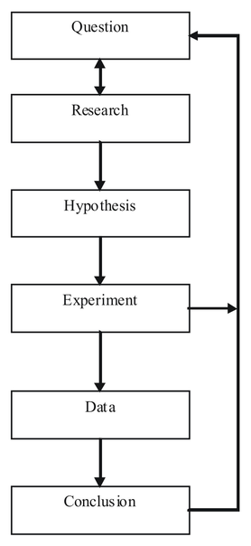{kind=link}
This flow chart shows the steps of the scientific method.
In statistics, controlled experiments are often used. A controlled experiment generally compares the results obtained from an experimental sample against a control sample, which is practically identical to the experimental sample except for the one aspect whose effect is being tested (the independent variable). A good example of this would be a drug trial, where the effects of the actual drug are tested against a placebo.
When is One Technique Better Than the Other?
Surveys and experiments are both techniques used in statistics. They have similarities, but an in depth look into these two techniques will reveal how different they are. When a businessman wants to market his products, it's a survey he will need and not an experiment. On the other hand, a scientist who has discovered a new element or drug will need an experiment, and not a survey, to prove its usefulness. A survey involves asking different people about their opinion on a particular product or about a particular issue, whereas an experiment is a comprehensive study about something with the aim of proving it scientifically. They both have their place in different types of studies.
7.2. Populations and Samples
7.3. Sample Surveys
7.3.1. The Literary Digest Poll
Incorrect polling techniques used during the 1936 presidential election led to the demise of the popular magazine, The Literary Digest.
Learning Objective
Critique the problems with the techniques used by the Literary Digest Poll
Key Points
- As it had done in 1920, 1924, 1928 and 1932, The Literary Digest conducted a straw poll regarding the likely outcome of the 1936 presidential election. Before 1936, it had always correctly predicted the winner. It predicted Landon would beat Roosevelt.
- In November, Landon carried only Vermont and Maine; President F. D. Roosevelt carried the 46 other states. Landon's electoral vote total of eight is a tie for the record low for a major-party nominee since the American political paradigm of the Democratic and Republican parties began in the 1850s.
- The polling techniques used were to blame, even though they polled 10 million people and got a response from 2.4 million.They polled mostly their readers, who had more money than the typical American during the Great Depression. Higher income people were more likely to vote Republican.
- Subsequent statistical analysis and studies have shown it is not necessary to poll ten million people when conducting a scientific survey. A much lower number, such as 1,500 persons, is adequate in most cases so long as they are appropriately chosen.
- This debacle led to a considerable refinement of public opinion polling techniques and later came to be regarded as ushering in the era of modern scientific public opinion research.
Key Terms
- bellwether
- anything that indicates future trends
- straw poll
- a survey of opinion which is unofficial, casual, or ad hoc
The Literary Digest
The Literary Digest was an influential general interest weekly magazine published by Funk & Wagnalls. Founded by Isaac Kaufmann Funk in 1890, it eventually merged with two similar weekly magazines, Public Opinion and Current Opinion.

Cover of the February 19, 1921 edition of The Literary Digest.
History
Beginning with early issues, the emphasis of The Literary Digest was on opinion articles and an analysis of news events. Established as a weekly news magazine, it offered condensations of articles from American, Canadian, and European publications. Type-only covers gave way to illustrated covers during the early 1900s. After Isaac Funk's death in 1912, Robert Joseph Cuddihy became the editor. In the 1920s, the covers carried full-color reproductions of famous paintings . By 1927, The Literary Digest climbed to a circulation of over one million. Covers of the final issues displayed various photographic and photo-montage techniques. In 1938, it merged with the Review of Reviews, only to fail soon after. Its subscriber list was bought by Time.
Presidential Poll
The Literary Digest is best-remembered today for the circumstances surrounding its demise. As it had done in 1920, 1924, 1928 and 1932, it conducted a straw poll regarding the likely outcome of the 1936 presidential election. Before 1936, it had always correctly predicted the winner.
The 1936 poll showed that the Republican candidate, Governor Alfred Landon of Kansas, was likely to be the overwhelming winner. This seemed possible to some, as the Republicans had fared well in Maine, where the congressional and gubernatorial elections were then held in September, as opposed to the rest of the nation, where these elections were held in November along with the presidential election, as they are today. This outcome seemed especially likely in light of the conventional wisdom, "As Maine goes, so goes the nation," a saying coined because Maine was regarded as a "bellwether" state which usually supported the winning candidate's party.
In November, Landon carried only Vermont and Maine; President Franklin Delano Roosevelt carried the 46 other states . Landon's electoral vote total of eight is a tie for the record low for a major-party nominee since the American political paradigm of the Democratic and Republican parties began in the 1850s. The Democrats joked, "As goes Maine, so goes Vermont," and the magazine was completely discredited because of the poll, folding soon thereafter.
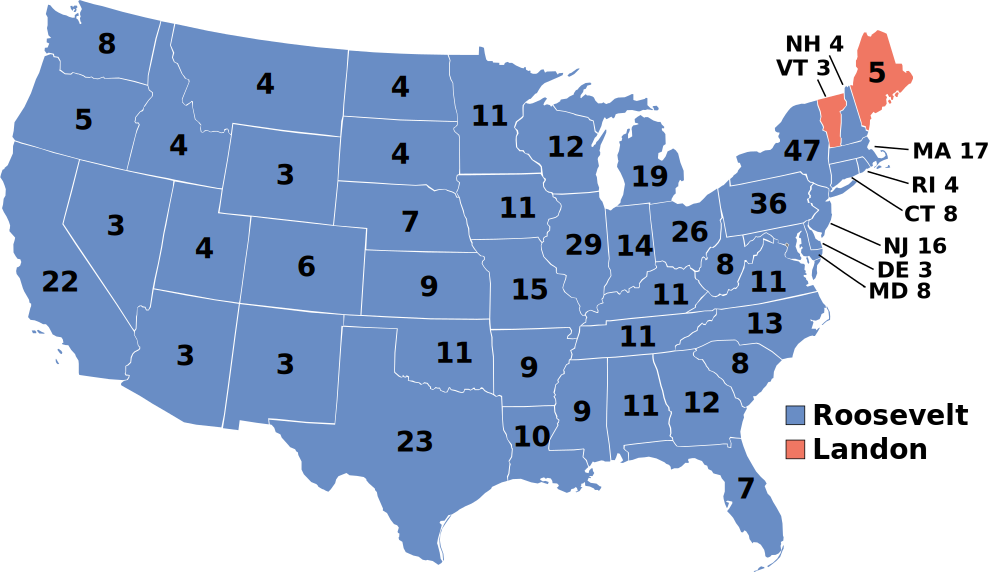{kind=link}
This map shows the results of the 1936 presidential election. Red denotes states won by Landon/Knox, blue denotes those won by Roosevelt/Garner. Numbers indicate the number of electoral votes allotted to each state.
In retrospect, the polling techniques employed by the magazine were to blame. Although it had polled ten million individuals (of whom about 2.4 million responded, an astronomical total for any opinion poll), it had surveyed firstly its own readers, a group with disposable incomes well above the national average of the time, shown in part by their ability still to afford a magazine subscription during the depths of the Great Depression, and then two other readily available lists: that of registered automobile owners and that of telephone users. While such lists might come close to providing a statistically accurate cross-section of Americans today, this assumption was manifestly incorrect in the 1930s. Both groups had incomes well above the national average of the day, which resulted in lists of voters far more likely to support Republicans than a truly typical voter of the time. In addition, although 2.4 million responses is an astronomical number, it is only 24% of those surveyed, and the low response rate to the poll is probably a factor in the debacle. It is erroneous to assume that the responders and the non-responders had the same views and merely to extrapolate the former on to the latter. Further, as subsequent statistical analysis and study have shown, it is not necessary to poll ten million people when conducting a scientific survey . A much lower number, such as 1,500 persons, is adequate in most cases so long as they are appropriately chosen.
George Gallup's American Institute of Public Opinion achieved national recognition by correctly predicting the result of the 1936 election and by also correctly predicting the quite different results of the Literary Digest poll to within about 1%, using a smaller sample size of 50,000. This debacle led to a considerable refinement of public opinion polling techniques and later came to be regarded as ushering in the era of modern scientific public opinion research.
7.3.2. The Year the Polls Elected Dewey
In the 1948 presidential election, the use of quota sampling led the polls to inaccurately predict that Dewey would defeat Truman.
Learning Objective
Criticize the polling methods used in 1948 that incorrectly predicted that Dewey would win the presidency
Key Points
- Many polls, including Gallup, Roper, and Crossley, wrongfully predicted the outcome of the election due to their use of quota sampling.
- Quota sampling is when each interviewer polls a certain number of people in various categories that are representative of the whole population, such as age, race, sex, and income.
- One major problem with quota sampling includes the possibility of missing an important representative category that is key to how people vote. Another is the human element involved.
- Truman, as it turned out, won the electoral vote by a 303-189 majority over Dewey, although a swing of just a few thousand votes in Ohio, Illinois, and California would have produced a Dewey victory.
- One of the most famous blunders came when the Chicago Tribune wrongfully printed the inaccurate headline, "Dewey Defeats Truman" on November 3, 1948, the day after Truman defeated Dewey.
Key Terms
- quota sampling
- a sampling method that chooses a representative cross-section of the population by taking into consideration each important characteristic of the population proportionally, such as income, sex, race, age, etc.
- margin of error
- An expression of the lack of precision in the results obtained from a sample.
- quadrennial
- happening every four years
1948 Presidential Election
The United States presidential election of 1948 was the 41stquadrennial presidential election, held on Tuesday, November 2, 1948. Incumbent President Harry S. Truman, the Democratic nominee, successfully ran for election against Thomas E. Dewey, the Republican nominee.
This election is considered to be the greatest election upset in American history. Virtually every prediction (with or without public opinion polls) indicated that Truman would be defeated by Dewey. Both parties had severe ideological splits, with the far left and far right of the Democratic Party running third-party campaigns. Truman's surprise victory was the fifth consecutive presidential win for the Democratic Party, a record never surpassed since contests against the Republican Party began in the 1850s. Truman's feisty campaign style energized his base of traditional Democrats, most of the white South, Catholic and Jewish voters, and—in a surprise—Midwestern farmers. Thus, Truman's election confirmed the Democratic Party's status as the nation's majority party, a status it would retain until the conservative realignment in 1968.
Incorrect Polls
As the campaign drew to a close, the polls showed Truman was gaining. Though Truman lost all nine of the Gallup Poll's post-convention surveys, Dewey's Gallup lead dropped from 17 points in late September to 9% in mid-October to just 5 points by the end of the month, just above the poll's margin of error. Although Truman was gaining momentum, most political analysts were reluctant to break with the conventional wisdom and say that a Truman victory was a serious possibility. The Roper Poll had suspended its presidential polling at the end of September, barring "some development of outstanding importance," which, in their subsequent view, never occurred. Dewey was not unaware of his slippage, but he had been convinced by his advisers and family not to counterattack the Truman campaign.
Let's take a closer look at the polls. The Gallup, Roper, and Crossley polls all predicted a Dewey win. The actual results are shown in the following table: . How did this happen?
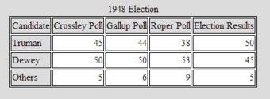{kind=link}
The table shows the results of three polls against the actual results in the 1948 presidential election. Notice that Dewey was ahead in all three polls, but ended up losing the election.
The Crossley, Gallup, and Roper organizations all used quota sampling. Each interviewer was assigned a specified number of subjects to interview. Moreover, the interviewer was required to interview specified numbers of subjects in various categories, based on residential area, sex, age, race, economic status, and other variables. The intent of quota sampling is to ensure that the sample represents the population in all essential respects.
This seems like a good method on the surface, but where does one stop? What if a significant criterion was left out--something that deeply affected the way in which people vote? This would cause significant error in the results of the poll. In addition, quota sampling involves a human element. Pollsters, in reality, were left to poll whomever they chose. Research shows that the polls tended to overestimate the Republican vote. In earlier years, the margin of error was large enough that most polls still accurately predicted the winner, but in 1948, their luck ran out. Quota sampling had to go.
Mistake in the Newspapers
One of the most famous blunders came when the Chicago Tribune wrongfully printed the inaccurate headline, "Dewey Defeats Truman" on November 3, 1948, the day after incumbent United States President Harry S. Truman beat Republican challenger and Governor of New York Thomas E. Dewey.
The paper's erroneous headline became notorious after a jubilant Truman was photographed holding a copy of the paper during a stop at St. Louis Union Station while returning by train from his home in Independence, Missouri to Washington, D.C .
{kind=link}
President Truman holds up the newspaper that wrongfully reported his defeat.
Truman, as it turned out, won the electoral vote by a 303-189 majority over Dewey, although a swing of just a few thousand votes in Ohio, Illinois, and California would have produced a Dewey victory.
7.3.3. Using Chance in Survey Work
When conducting a survey, a sample can be chosen by chance or by more methodical methods.
Learning Objective
Distinguish between probability samples and non-probability samples for surveys
Key Points
- A probability sampling is one in which every unit in the population has a chance (greater than zero) of being selected in the sample, and this probability can be accurately determined.
- Probability sampling includes simple random sampling, systematic sampling, stratified sampling, and cluster sampling. These various ways of probability sampling have two things in common: every element has a known nonzero probability of being sampled, and random selection is involved at some point.
- Non-probability sampling is any sampling method wherein some elements of the population have no chance of selection (these are sometimes referred to as 'out of coverage'/'undercovered'), or where the probability of selection can't be accurately determined.
Key Terms
- purposive sampling
- occurs when the researchers choose the sample based on who they think would be appropriate for the study; used primarily when there is a limited number of people that have expertise in the area being researched
- nonresponse
- the absence of a response
In order to conduct a survey, a sample from the population must be chosen. This sample can be chosen using chance, or it can be chosen more systematically.
Probability Sampling for Surveys
A probability sampling is one in which every unit in the population has a chance (greater than zero) of being selected in the sample, and this probability can be accurately determined. The combination of these traits makes it possible to produce unbiased estimates of population totals, by weighting sampled units according to their probability of selection.
Let's say we want to estimate the total income of adults living in a given street by using a survey with questions. We visit each household in that street, identify all adults living there, and randomly select one adult from each household. (For example, we can allocate each person a random number, generated from a uniform distribution between 0 and 1, and select the person with the highest number in each household). We then interview the selected person and find their income. People living on their own are certain to be selected, so we simply add their income to our estimate of the total. But a person living in a household of two adults has only a one-in-two chance of selection. To reflect this, when we come to such a household, we would count the selected person's income twice towards the total. (The person who is selected from that household can be loosely viewed as also representing the person who isn't selected. )
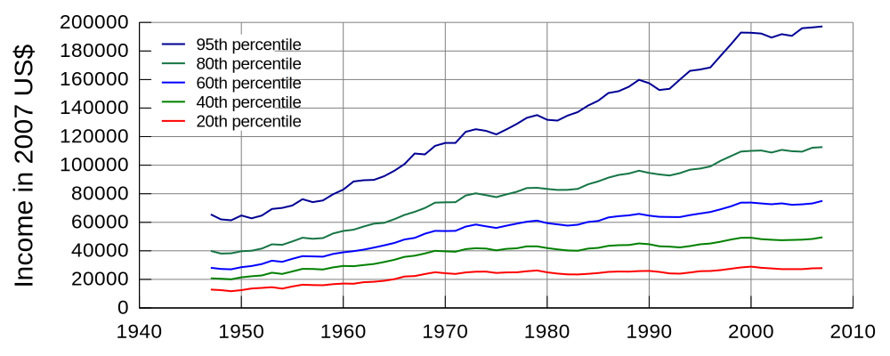{kind=link}
Graph of United States income distribution from 1947 through 2007 inclusive, normalized to 2007 dollars. The data is from the US Census, which is a survey over the entire population, not just a sample.
In the above example, not everybody has the same probability of selection; what makes it a probability sample is the fact that each person's probability is known. When every element in the population does have the same probability of selection, this is known as an 'equal probability of selection' (EPS) design. Such designs are also referred to as 'self-weighting' because all sampled units are given the same weight.
Probability sampling includes: Simple Random Sampling, Systematic Sampling, Stratified Sampling, Probability Proportional to Size Sampling, and Cluster or Multistage Sampling. These various ways of probability sampling have two things in common: every element has a known nonzero probability of being sampled, and random selection is involved at some point.
Non-Probability Sampling for Surveys
Non-probability sampling is any sampling method wherein some elements of the population have no chance of selection (these are sometimes referred to as 'out of coverage'/'undercovered'), or where the probability of selection can't be accurately determined. It involves the selection of elements based on assumptions regarding the population of interest, which forms the criteria for selection. Hence, because the selection of elements is nonrandom, non-probability sampling does not allow the estimation of sampling errors. These conditions give rise to exclusion bias, placing limits on how much information a sample can provide about the population. Information about the relationship between sample and population is limited, making it difficult to extrapolate from the sample to the population.
Let's say we visit every household in a given street and interview the first person to answer the door. In any household with more than one occupant, this is a non-probability sample, because some people are more likely to answer the door (e.g. an unemployed person who spends most of their time at home is more likely to answer than an employed housemate who might be at work when the interviewer calls) and it's not practical to calculate these probabilities.
Non-probability sampling methods include accidental sampling, quota sampling, and purposive sampling. In addition, nonresponse effects may turn any probability design into a non-probability design if the characteristics of nonresponse are not well understood, since nonresponse effectively modifies each element's probability of being sampled.
7.3.4. How Well Do Probability Methods Work?
Even when using probability sampling methods, bias can still occur.
Learning Objective
Analyze the problems associated with probability sampling
Key Points
- Undercoverage occurs when some groups in the population are left out of the process of choosing the sample.
- Nonresponse occurs when an individual chosen for the sample can't be contacted or does not cooperate.
- Response bias occurs when a respondent lies about his or her true beliefs.
- The wording of questions--especially if they are leading questions-- can affect the outcome of a survey.
- The larger the sample size, the more accurate the survey.
Key Terms
- undercoverage
- Occurs when a survey fails to reach a certain portion of the population.
- nonresponse
- the absence of a response
- response bias
- Occurs when the answers given by respondents do not reflect their true beliefs.
Probability vs. Non-probability Sampling
In earlier sections, we discussed how samples can be chosen. Failure to use probability sampling may result in bias or systematic errors in the way the sample represents the population. This is especially true of voluntary response samples--in which the respondents choose themselves if they want to be part of a survey-- and convenience samples--in which individuals easiest to reach are chosen.
However, even probability sampling methods that use chance to select a sample are prone to some problems. Recall some of the methods used in probability sampling: simple random samples, stratified samples, cluster samples, and systematic samples. In these methods, each member of the population has a chance of being chosen for the sample, and that chance is a known probability.
Problems With Probability Sampling
Random sampling eliminates some of the bias that presents itself in sampling, but when a sample is chosen by human beings, there are always going to be some unavoidable problems. When a sample is chosen, we first need an accurate and complete list of the population. This type of list is often not available, causing most samples to suffer from undercoverage. For example, if we chose a sample from a list of households, we will miss those who are homeless, in prison, or living in a college dorm. In another example, a telephone survey calling landline phones will potentially miss those who are unlisted, those who only use a cell phone, and those who do not have a phone at all. Both of these examples will cause a biased sample in which poor people, whose opinions may very well differ from those of the rest of the population, are underrepresented.
Another source of bias is nonresponse, which occurs when a selected individual cannot be contacted or refuses to participate in the survey. Many people do not pick up the phone when they do not know the person who is calling . Nonresponse is often higher in urban areas, so most researchers conducting surveys will substitute other people in the same area to avoid favoring rural areas. However, if the people eventually contacted differ from those who are rarely at home or refuse to answer questions for one reason or another, some bias will still be present.
{kind=link}
This image shows a ringing phone that is not being answered.
A third example of bias is called response bias. Respondents may not answer questions truthfully, especially if the survey asks about illegal or unpopular behavior. The race and sex of the interviewer may influence people to respond in a way that is more extreme than their true beliefs. Careful training of pollsters can greatly reduce response bias.
Finally, another source of bias can come in the wording of questions. Confusing or leading questions can strongly influence the way a respondent answers questions.
Conclusion
When reading the results of a survey, it is important to know the exact questions asked, the rate of nonresponse, and the method of survey before you trust a poll. In addition, remember that a larger sample size will provide more accurate results.
7.3.5. The Gallup Poll
The Gallup Poll is a public opinion poll that conducts surveys in 140 countries around the world.
Learning Objective
Examine the pros and cons of the way in which the Gallup Poll is conducted
Key Points
- The Gallup Poll measures and tracks the public's attitudes concerning virtually every political, social, and economic issues of the day in 140 countries around the world.
- The Gallup Polls have been traditionally known for their accuracy in predicting presidential elections in the United States from 1936 to 2008. They were only incorrect in 1948 and 1976.
- Today, Gallup samples people using both landline telephones and cell phones. They have gained much criticism for not adapting quickly enough for a society that is growing more and more towards using only their cell phones over landlines.
Key Terms
- Objective
- not influenced by the emotions or prejudices
- public opinion polls
- surveys designed to represent the beliefs of a population by conducting a series of questions and then extrapolating generalities in ratio or within confidence intervals
Overview of the Gallup Organization
Gallup, Inc. is a research-based performance-management consulting company. Originally founded by George Gallup in 1935, the company became famous for its public opinion polls, which were conducted in the United States and other countries. Today, Gallup has more than 40 offices in 27 countries. The world headquarters are located in Washington, D.C. , while the operational headquarters are in Omaha, Nebraska. Its current Chairman and CEO is Jim Clifton.
{kind=link}
The Gallup, Inc. world headquarters in Washington, D.C. The National Portrait Gallery can be seen in the reflection.
History of Gallup
George Gallup founded the American Institute of Public Opinion, the precursor to the Gallup Organization, in Princeton, New Jersey in 1935. He wished to objectively determine the opinions held by the people. To ensure his independence and objectivity, Dr. Gallup resolved that he would undertake no polling that was paid for or sponsored in any way by special interest groups such as the Republican and Democratic parties, a commitment that Gallup upholds to this day.
In 1936, Gallup successfully predicted that Franklin Roosevelt would defeat Alfred Landon for the U.S. presidency; this event quickly popularized the company. In 1938, Dr. Gallup and Gallup Vice President David Ogilvy began conducting market research for advertising companies and the film industry. In 1958, the modern Gallup Organization was formed when George Gallup grouped all of his polling operations into one organization. Since then, Gallup has seen huge expansion into several other areas.
The Gallup Poll
The Gallup Poll is the division of Gallup that regularly conducts public opinion polls in more than 140 countries around the world. Gallup Polls are often referenced in the mass media as a reliable and objective audience measurement of public opinion. Gallup Poll results, analyses, and videos are published daily on Gallup.com in the form of data-driven news. The poll loses about \$10 million a year but gives the company the visibility of a very well-known brand.
Historically, the Gallup Poll has measured and tracked the public's attitudes concerning virtually every political, social, and economic issue of the day, including highly sensitive and controversial subjects. In 2005, Gallup began its World Poll, which continually surveys citizens in more than 140 countries, representing 95% of the world's adult population. General and regional-specific questions, developed in collaboration with the world's leading behavioral economists, are organized into powerful indexes and topic areas that correlate with real-world outcomes.
Reception of the Poll
The Gallup Polls have been recognized in the past for their accuracy in predicting the outcome of United States presidential elections, though they have come under criticism more recently. From 1936 to 2008, Gallup correctly predicted the winner of each election--with the notable exceptions of the 1948 Thomas Dewey-Harry S. Truman election, when nearly all pollsters predicted a Dewey victory, and the 1976 election, when they inaccurately projected a slim victory by Gerald Ford over Jimmy Carter. For the 2008 U.S. presidential election, Gallup correctly predicted the winner, but was rated 17th out of 23 polling organizations in terms of the precision of its pre-election polls relative to the final results. In 2012, Gallup's final election survey had Mitt Romney 49% and Barack Obama 48%, compared to the election results showing Obama with 51.1% to Romney's 47.2%. Poll analyst Nate Silver found that Gallup's results were the least accurate of the 23 major polling firms Silver analyzed, having the highest incorrect average of being 7.2 points away from the final result. Frank Newport, the Editor-in-Chief of Gallup, responded to the criticism by stating that Gallup simply makes an estimate of the national popular vote rather than predicting the winner, and that their final poll was within the statistical margin of error.
In addition to the poor results of the poll in 2012, many people are criticizing Gallup on their sampling techniques. Gallup conducts 1,000 interviews per day, 350 days out of the year, among both landline and cell phones across the U.S., for its health and well-being survey. Though Gallup surveys both landline and cell phones, they conduct only 150 cell phone samples out of 1000, making up 15%. The population of the U.S. that relies only on cell phones (owning no landline connections) makes up more than double that number, at 34%. This fact has been a major criticism in recent times of the reliability Gallup polling, compared to other polls, in its failure to compensate accurately for the quick adoption of "cell phone only" Americans.
7.3.6. Telephone Surveys
Telephone surveys can reach a wide range of people very quickly and very inexpensively.
Learning Objective
Identify the advantages and disadvantages of telephone surveys
Key Points
- About 95% of people in the United States have a telephone (see, so conducting a poll by calling people is a good way to reach nearly every part of the population.
- Calling people by telephone is a quick process, allowing researches to gain a lot of data in a short amount of time.
- In certain polls, the interviewer or interviewee (or both) may wish to remain anonymous, which can be achieved if the poll is conducted via telephone by a third party.
- Non-response bias is one of the major problems with telephone surveys as many people do not answer calls from people they do not know.
- Due to certain uncontrollable factors (e.g., unlisted phone numbers, people who only use cell phones, or instances when no one is home/available to take pollster calls), undercoverage can negatively affect the outcome of telephone surveys.
Key Terms
- undercoverage
- Occurs when a survey fails to reach a certain portion of the population.
- response bias
- Occurs when the answers given by respondents do not reflect their true beliefs.
- non-response bias
- Occurs when the sample becomes biased because some of those initially selected refuse to respond.
A telephone survey is a type of opinion poll used by researchers. As with other methods of polling, their are advantages and disadvantages to utilizing telephone surveys.
Advantages
- Large scale accessibility. About 95% of people in the United States have a telephone (see ), so conducting a poll by via telephone is a good way to reach most parts of the population.
- Efficient data collection. Conducting calls via telephone produces a quick process, allowing researches to gain a large amount of data in a short amount of time. Previously, pollsters physically had to go to each interviewee's home (which, obviously, was more time consuming).
- Inexpensive. Phone interviews are not costly (e.g., telephone researchers do not pay for travel).
- Anonymity. In certain polls, the interviewer or interviewee (or both) may wish to remain anonymous, which can be achieved if the poll is conducted over the phone by a third party.
Disadvantages
- Lack of visual materials. Depending on what the researchers are asking, sometimes it may be helpful for the respondent to see a product in person, which of course, cannot be done over the phone.
- Call screening. As some people do not answer calls from strangers, or may refuse to answer the poll, poll samples are not always representative samples from a population due to what is known as non-response bias. In this type of bias, the characteristics of those who agree to be interviewed may be markedly different from those who decline. That is, the actual sample is a biased version of the population the pollster wants to analyze. If those who refuse to answer, or are never reached, have the same characteristics as those who do answer, then the final results should be unbiased. However, if those who do not answer have different opinions, then the results have bias. In terms of election polls, studies suggest that bias effects are small, but each polling firm has its own techniques for adjusting weights to minimize selection bias.
- Undercoverage. Undercoverage is a highly prevalent source of bias. If the pollsters only choose telephone numbers from a telephone directory, they miss those who have unlisted landlines or only have cell phones (which is is becoming more the norm). In addition, if the pollsters only conduct calls between 9:00 a.m and 5:00 p.m, Monday through Friday, they are likely to miss a huge portion of the working population—those who may have very different opinions than the non-working population.
7.3.7. Chance Error and Bias
Chance error and bias are two different forms of error associated with sampling.
Learning Objective
Differentiate between random, or chance, error and bias
Key Points
- The error that is associated with the unpredictable variation in the sample is called a random, or chance, error. It is only an "error" in the sense that it would automatically be corrected if we could survey the entire population.
- Random error cannot be eliminated completely, but it can be reduced by increasing the sample size.
- A sampling bias is a bias in which a sample is collected in such a way that some members of the intended population are less likely to be included than others.
- There are various types of bias, including selection from a specific area, self-selection, pre-screening, and exclusion.
Key Terms
- bias
- (Uncountable) Inclination towards something; predisposition, partiality, prejudice, preference, predilection.
- random sampling
- a method of selecting a sample from a statistical population so that every subject has an equal chance of being selected
- standard error
- A measure of how spread out data values are around the mean, defined as the square root of the variance.
Sampling Error
In statistics, a sampling error is the error caused by observing a sample instead of the whole population. The sampling error can be found by subtracting the value of a parameter from the value of a statistic. The variations in the possible sample values of a statistic can theoretically be expressed as sampling errors, although in practice the exact sampling error is typically unknown.
In sampling, there are two main types of error: systematic errors (or biases) and random errors (or chance errors).
Random/Chance Error
Random sampling is used to ensure that a sample is truly representative of the entire population. If we were to select a perfect sample (which does not exist), we would reach the same exact conclusions that we would have reached if we had surveyed the entire population. Of course, this is not possible, and the error that is associated with the unpredictable variation in the sample is called random, or chance, error. This is only an "error" in the sense that it would automatically be corrected if we could survey the entire population rather than just a sample taken from it. It is not a mistake made by the researcher.
Random error always exists. The size of the random error, however, can generally be controlled by taking a large enough random sample from the population. Unfortunately, the high cost of doing so can be prohibitive. If the observations are collected from a random sample, statistical theory provides probabilistic estimates of the likely size of the error for a particular statistic or estimator. These are often expressed in terms of its standard error:
$\displaystyle SE_{\bar{x}} = \frac{s}{\sqrt{n}}$
Bias
In statistics, sampling bias is a bias in which a sample is collected in such a way that some members of the intended population are less likely to be included than others. It results in a biased sample, a non-random sample of a population in which all individuals, or instances, were not equally likely to have been selected. If this is not accounted for, results can be erroneously attributed to the phenomenon under study rather than to the method of sampling.
There are various types of sampling bias:
- Selection from a specific real area. For example, a survey of high school students to measure teenage use of illegal drugs will be a biased sample because it does not include home-schooled students or dropouts.
- Self-selection bias, which is possible whenever the group of people being studied has any form of control over whether to participate. Participants' decision to participate may be correlated with traits that affect the study, making the participants a non-representative sample. For example, people who have strong opinions or substantial knowledge may be more willing to spend time answering a survey than those who do not.
- Pre-screening of trial participants, or advertising for volunteers within particular groups. For example, a study to "prove" that smoking does not affect fitness might recruit at the local fitness center, but advertise for smokers during the advanced aerobics class and for non-smokers during the weight loss sessions.
- Exclusion bias, or exclusion of particular groups from the sample. For example, subjects may be left out if they either migrated into the study area or have moved out of the area.
7.4. Sampling Distributions
7.4.1. What Is a Sampling Distribution?
The sampling distribution of a statistic is the distribution of the statistic for all possible samples from the same population of a given size.
Learning Objective
Recognize the characteristics of a sampling distribution
Key Points
- A critical part of inferential statistics involves determining how far sample statistics are likely to vary from each other and from the population parameter.
- The sampling distribution of a statistic is the distribution of that statistic, considered as a random variable, when derived from a random sample of size $n$ .
- Sampling distributions allow analytical considerations to be based on the sampling distribution of a statistic rather than on the joint probability distribution of all the individual sample values.
- The sampling distribution depends on: the underlying distribution of the population, the statistic being considered, the sampling procedure employed, and the sample size used.
Key Terms
- inferential statistics
- A branch of mathematics that involves drawing conclusions about a population based on sample data drawn from it.
- sampling distribution
- The probability distribution of a given statistic based on a random sample.
Suppose you randomly sampled 10 women between the ages of 21 and 35 years from the population of women in Houston, Texas, and then computed the mean height of your sample. You would not expect your sample mean to be equal to the mean of all women in Houston. It might be somewhat lower or higher, but it would not equal the population mean exactly. Similarly, if you took a second sample of 10 women from the same population, you would not expect the mean of this second sample to equal the mean of the first sample.
{kind=link}
Suppose you randomly sampled 10 people from the population of women in Houston, Texas between the ages of 21 and 35 years and computed the mean height of your sample. You would not expect your sample mean to be equal to the mean of all women in Houston.
Inferential statistics involves generalizing from a sample to a population. A critical part of inferential statistics involves determining how far sample statistics are likely to vary from each other and from the population parameter. These determinations are based on sampling distributions. The sampling distribution of a statistic is the distribution of that statistic, considered as a random variable, when derived from a random sample of size $n$ . It may be considered as the distribution of the statistic for all possible samples from the same population of a given size. Sampling distributions allow analytical considerations to be based on the sampling distribution of a statistic rather than on the joint probability distribution of all the individual sample values.
The sampling distribution depends on: the underlying distribution of the population, the statistic being considered, the sampling procedure employed, and the sample size used. For example, consider a normal population with mean $\mu$ and variance $\sigma$ . Assume we repeatedly take samples of a given size from this population and calculate the arithmetic mean for each sample. This statistic is then called the sample mean. Each sample has its own average value, and the distribution of these averages is called the "sampling distribution of the sample mean. " This distribution is normal since the underlying population is normal, although sampling distributions may also often be close to normal even when the population distribution is not.
An alternative to the sample mean is the sample median. When calculated from the same population, it has a different sampling distribution to that of the mean and is generally not normal (but it may be close for large sample sizes).
7.4.2. Properties of Sampling Distributions
Knowledge of the sampling distribution can be very useful in making inferences about the overall population.
Learning Objective
Describe the general properties of sampling distributions and the use of standard error in analyzing them
Key Points
- In practice, one will collect sample data and, from these data, estimate parameters of the population distribution.
- Knowing the degree to which means from different samples would differ from each other and from the population mean would give you a sense of how close your particular sample mean is likely to be to the population mean.
- The standard deviation of the sampling distribution of a statistic is referred to as the standard error of that quantity.
- If all the sample means were very close to the population mean, then the standard error of the mean would be small.
- On the other hand, if the sample means varied considerably, then the standard error of the mean would be large.
Key Terms
- inferential statistics
- A branch of mathematics that involves drawing conclusions about a population based on sample data drawn from it.
- sampling distribution
- The probability distribution of a given statistic based on a random sample.
Sampling Distributions and Inferential Statistics
Sampling distributions are important for inferential statistics. In practice, one will collect sample data and, from these data, estimate parameters of the population distribution. Thus, knowledge of the sampling distribution can be very useful in making inferences about the overall population.
For example, knowing the degree to which means from different samples differ from each other and from the population mean would give you a sense of how close your particular sample mean is likely to be to the population mean. Fortunately, this information is directly available from a sampling distribution. The most common measure of how much sample means differ from each other is the standard deviation of the sampling distribution of the mean. This standard deviation is called the standard error of the mean.
Standard Error
The standard deviation of the sampling distribution of a statistic is referred to as the standard error of that quantity. For the case where the statistic is the sample mean, and samples are uncorrelated, the standard error is:
Where $s$ is the sample standard deviation and $n$ is the size (number of items) in the sample. An important implication of this formula is that the sample size must be quadrupled (multiplied by 4) to achieve half the measurement error. When designing statistical studies where cost is a factor, this may have a role in understanding cost-benefit tradeoffs.
If all the sample means were very close to the population mean, then the standard error of the mean would be small. On the other hand, if the sample means varied considerably, then the standard error of the mean would be large. To be specific, assume your sample mean is 125 and you estimated that the standard error of the mean is 5. If you had a normal distribution, then it would be likely that your sample mean would be within 10 units of the population mean since most of a normal distribution is within two standard deviations of the mean.
More Properties of Sampling Distributions
- The overall shape of the distribution is symmetric and approximately normal.
- There are no outliers or other important deviations from the overall pattern.
- The center of the distribution is very close to the true population mean.
A statistical study can be said to be biased when one outcome is systematically favored over another. However, the study can be said to be unbiased if the mean of its sampling distribution is equal to the true value of the parameter being estimated.
Finally, the variability of a statistic is described by the spread of its sampling distribution. This spread is determined by the sampling design and the size of the sample. Larger samples give smaller spread. As long as the population is much larger than the sample (at least 10 times as large), the spread of the sampling distribution is approximately the same for any population size
7.4.3. Creating a Sampling Distribution
Learn to create a sampling distribution from a discrete set of data.
Learning Objective
Differentiate between a frequency distribution and a sampling distribution
Key Points
- Consider three pool balls, each with a number on it.
- Two of the balls are selected randomly (with replacement), and the average of their numbers is computed.
- The relative frequencies are equal to the frequencies divided by nine because there are nine possible outcomes.
- The distribution created from these relative frequencies is called the sampling distribution of the mean.
- As the number of samples approaches infinity, the frequency distribution will approach the sampling distribution.
Key Terms
- sampling distribution
- The probability distribution of a given statistic based on a random sample.
- frequency distribution
- a representation, either in a graphical or tabular format, which displays the number of observations within a given interval
We will illustrate the concept of sampling distributions with a simple example. Consider three pool balls, each with a number on it. Two of the balls are selected randomly (with replacement), and the average of their numbers is computed. All possible outcomes are shown below.
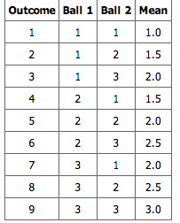{kind=link}
This table shows all the possible outcome of selecting two pool balls randomly from a population of three.
Notice that all the means are either 1.0, 1.5, 2.0, 2.5, or 3.0. The frequencies of these means are shown below. The relative frequencies are equal to the frequencies divided by nine because there are nine possible outcomes.
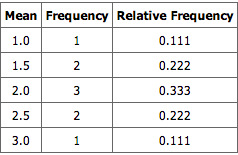{kind=link}
This table shows the frequency of means for $N=2$ .
The figure below shows a relative frequency distribution of the means. This distribution is also a probability distribution since the $y$ -axis is the probability of obtaining a given mean from a sample of two balls in addition to being the relative frequency.
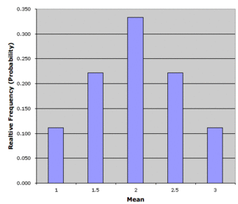{kind=link}
Relative frequency distribution of our pool ball example.
The distribution shown in the above figure is called the sampling distribution of the mean. Specifically, it is the sampling distribution of the mean for a sample size of 2 ($N=2$ ). For this simple example , the distribution of pool balls and the sampling distribution are both discrete distributions. The pool balls have only the numbers 1, 2, and 3, and a sample mean can have one of only five possible values.
There is an alternative way of conceptualizing a sampling distribution that will be useful for more complex distributions. Imagine that two balls are sampled (with replacement), and the mean of the two balls is computed and recorded. This process is repeated for a second sample, a third sample, and eventually thousands of samples. After thousands of samples are taken and the mean is computed for each, a relative frequency distribution is drawn. The more samples, the closer the relative frequency distribution will come to the sampling distribution shown in the above figure. As the number of samples approaches infinity , the frequency distribution will approach the sampling distribution. This means that you can conceive of a sampling distribution as being a frequency distribution based on a very large number of samples. To be strictly correct, the sampling distribution only equals the frequency distribution exactly when there is an infinite number of samples.
7.4.4. Continuous Sampling Distributions
When we have a truly continuous distribution, it is not only impractical but actually impossible to enumerate all possible outcomes.
Learning Objective
Differentiate between discrete and continuous sampling distributions
Key Points
- In continuous distributions, the probability of obtaining any single value is zero.
- Therefore, these values are called probability densities rather than probabilities.
- A probability density function, or density of a continuous random variable, is a function that describes the relative likelihood for this random variable to take on a given value.
Key Term
- probability density function
- any function whose integral over a set gives the probability that a random variable has a value in that set
In the previous section, we created a sampling distribution out of a population consisting of three pool balls. This distribution was discrete, since there were a finite number of possible observations. Now we will consider sampling distributions when the population distribution is continuous.
What if we had a thousand pool balls with numbers ranging from 0.001 to 1.000 in equal steps? Note that although this distribution is not really continuous, it is close enough to be considered continuous for practical purposes. As before, we are interested in the distribution of the means we would get if we sampled two balls and computed the mean of these two. In the previous example, we started by computing the mean for each of the nine possible outcomes. This would get a bit tedious for our current example since there are 1,000,000 possible outcomes (1,000 for the first ball multiplied by 1,000 for the second.) Therefore, it is more convenient to use our second conceptualization of sampling distributions, which conceives of sampling distributions in terms of relative frequency distributions-- specifically, the relative frequency distribution that would occur if samples of two balls were repeatedly taken and the mean of each sample computed.
Probability Density Function
When we have a truly continuous distribution, it is not only impractical but actually impossible to enumerate all possible outcomes. Moreover, in continuous distributions, the probability of obtaining any single value is zero. Therefore, these values are called probability densities rather than probabilities.
A probability density function, or density of a continuous random variable, is a function that describes the relative likelihood for this random variable to take on a given value. The probability for the random variable to fall within a particular region is given by the integral of this variable's density over the region .
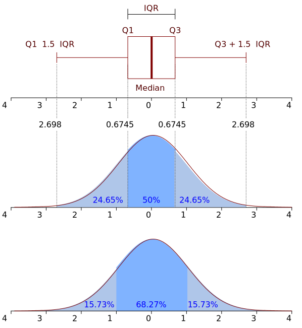{kind=link}
Boxplot and probability density function of a normal distribution $N(0, 2)$ .
7.4.5. Mean of All Sample Means (μ x)
The mean of the distribution of differences between sample means is equal to the difference between population means.
Learning Objective
Discover that the mean of the distribution of differences between sample means is equal to the difference between population means
Key Points
- Statistical analysis are very often concerned with the difference between means.
- The mean of the sampling distribution of the mean is μM1−M2 = μ1−2.
- The variance sum law states that the variance of the sampling distribution of the difference between means is equal to the variance of the sampling distribution of the mean for Population 1 plus the variance of the sampling distribution of the mean for Population 2.
Key Term
- sampling distribution
- The probability distribution of a given statistic based on a random sample.
Statistical analyses are, very often, concerned with the difference between means. A typical example is an experiment designed to compare the mean of a control group with the mean of an experimental group. Inferential statistics used in the analysis of this type of experiment depend on the sampling distribution of the difference between means.
The sampling distribution of the difference between means can be thought of as the distribution that would result if we repeated the following three steps over and over again:
- Sample n1 scores from Population 1 and n2 scores from Population 2;
- Compute the means of the two samples ( M1 and M2);
- Compute the difference between means M1−M2. The distribution of the differences between means is the sampling distribution of the difference between means.
The mean of the sampling distribution of the mean is:
μM1−M2 = μ1−2,
which says that the mean of the distribution of differences between sample means is equal to the difference between population means. For example, say that mean test score of all 12-year olds in a population is 34 and the mean of 10-year olds is 25. If numerous samples were taken from each age group and the mean difference computed each time, the mean of these numerous differences between sample means would be 34 - 25 = 9.
The variance sum law states that the variance of the sampling distribution of the difference between means is equal to the variance of the sampling distribution of the mean for Population 1 plus the variance of the sampling distribution of the mean for Population 2. The formula for the variance of the sampling distribution of the difference between means is as follows:
${ { \sigma }_{ { M }_{ 1 }-{ M } }^{ 2 } }_{ 2 }=\frac { { \sigma }_{ { M }_{ 1 } }^{ 2 } }{ { n }_{ 1 } } +\frac { { \sigma }_{ { M }_{ 2 } }^{ 2 } }{ { n }_{ 2 } }$ .
Recall that the standard error of a sampling distribution is the standard deviation of the sampling distribution, which is the square root of the above variance.
Let's look at an application of this formula to build a sampling distribution of the difference between means. Assume there are two species of green beings on Mars. The mean height of Species 1 is 32, while the mean height of Species 2 is 22. The variances of the two species are 60 and 70, respectively, and the heights of both species are normally distributed. You randomly sample 10 members of Species 1 and 14 members of Species 2.
The difference between means comes out to be 10, and the standard error comes out to be 3.317.
μM1−M2 = 32 - 22 = 10
Standard error equals the square root of (60 / 10) + (70 / 14) = 3.317.
The resulting sampling distribution as diagramed in , is normally distributed with a mean of 10 and a standard deviation of 3.317.
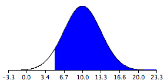{kind=link}
The distribution is normally distributed with a mean of 10 and a standard deviation of 3.317.
7.4.6. Shapes of Sampling Distributions
The overall shape of a sampling distribution is expected to be symmetric and approximately normal.
Learning Objective
Give examples of the various shapes a sampling distribution can take on
Key Points
- The concept of the shape of a distribution refers to the shape of a probability distribution.
- It most often arises in questions of finding an appropriate distribution to use to model the statistical properties of a population, given a sample from that population.
- A sampling distribution is assumed to have no outliers or other important deviations from the overall pattern.
- When calculated from the same population, the sample median has a different sampling distribution to that of the mean and is generally not normal; although, it may be close for large sample sizes.
Key Terms
- normal distribution
- A family of continuous probability distributions such that the probability density function is the normal (or Gaussian) function.
- skewed
- Biased or distorted (pertaining to statistics or information).
- Pareto Distribution
- The Pareto distribution, named after the Italian economist Vilfredo Pareto, is a power law probability distribution that is used in description of social, scientific, geophysical, actuarial, and many other types of observable phenomena.
- probability distribution
- A function of a discrete random variable yielding the probability that the variable will have a given value.
The "shape of a distribution" refers to the shape of a probability distribution. It most often arises in questions of finding an appropriate distribution to use in order to model the statistical properties of a population, given a sample from that population. The shape of a distribution will fall somewhere in a continuum where a flat distribution might be considered central; and where types of departure from this include:
- mounded (or unimodal)
- u-shaped
- j-shaped
- reverse-j-shaped
- multi-modal
The shape of a distribution is sometimes characterized by the behaviors of the tails (as in a long or short tail). For example, a flat distribution can be said either to have no tails or to have short tails. A normal distribution is usually regarded as having short tails, while a Pareto distribution has long tails. Even in the relatively simple case of a mounded distribution, the distribution may be skewed to the left or skewed to the right (with symmetric corresponding to no skew).
As previously mentioned, the overall shape of a sampling distribution is expected to be symmetric and approximately normal. This is due to the fact, or assumption, that there are no outliers or other important deviations from the overall pattern. This fact holds true when we repeatedly take samples of a given size from a population and calculate the arithmetic mean for each sample.
An alternative to the sample mean is the sample median. When calculated from the same population, it has a different sampling distribution to that of the mean and is generally not normal; although, it may be close for large sample sizes.
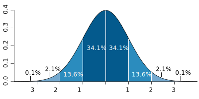{kind=link}
Sample distributions, when the sampling statistic is the mean, are generally expected to display a normal distribution.
7.4.7. Sampling Distributions and the Central Limit Theorem
The central limit theorem for sample means states that as larger samples are drawn, the sample means form their own normal distribution.
Learning Objective
Illustrate that as the sample size gets larger, the sampling distribution approaches normality
Key Points
- The normal distribution has the same mean as the original distribution and a variance that equals the original variance divided by $n$ , the sample size.
- $n$ is the number of values that are averaged together not the number of times the experiment is done.
- The usefulness of the theorem is that the sampling distribution approaches normality regardless of the shape of the population distribution.
Key Terms
- central limit theorem
- The theorem that states: If the sum of independent identically distributed random variables has a finite variance, then it will be (approximately) normally distributed.
- sampling distribution
- The probability distribution of a given statistic based on a random sample.
Example
- Imagine rolling a large number of identical, unbiased dice. The distribution of the sum (or average) of the rolled numbers will be well approximated by a normal distribution. Since real-world quantities are often the balanced sum of many unobserved random events, the central limit theorem also provides a partial explanation for the prevalence of the normal probability distribution. It also justifies the approximation of large-sample statistics to the normal distribution in controlled experiments.
The central limit theorem states that, given certain conditions, the mean of a sufficiently large number of independent random variables, each with a well-defined mean and well-defined variance, will be (approximately) normally distributed. The central limit theorem has a number of variants. In its common form, the random variables must be identically distributed. In variants, convergence of the mean to the normal distribution also occurs for non-identical distributions, given that they comply with certain conditions.
The central limit theorem for sample means specifically says that if you keep drawing larger and larger samples (like rolling 1, 2, 5, and, finally, 10 dice) and calculating their means the sample means form their own normal distribution (the sampling distribution). The normal distribution has the same mean as the original distribution and a variance that equals the original variance divided by $n$ , the sample size. $n$ is the number of values that are averaged together not the number of times the experiment is done.
Classical Central Limit Theorem
Consider a sequence of independent and identically distributed random variables drawn from distributions of expected values given by $\mu$ and finite variances given by $\sigma^2$ . Suppose we are interested in the sample average of these random variables. By the law of large numbers, the sample averages converge in probability and almost surely to the expected value $\mu$ as $n \rightarrow \infty$ . The classical central limit theorem describes the size and the distributional form of the stochastic fluctuations around the deterministic number $\mu$ during this convergence. More precisely, it states that as $n$ gets larger, the distribution of the difference between the sample average $S_n$ and its limit $\mu$ approximates the normal distribution with mean 0 and variance $\sigma^2$ . For large enough $n$ , the distribution of $S_n$ is close to the normal distribution with mean $\mu$ and variance
The upshot is that the sampling distribution of the mean approaches a normal distribution as $n$ , the sample size, increases. The usefulness of the theorem is that the sampling distribution approaches normality regardless of the shape of the population distribution.
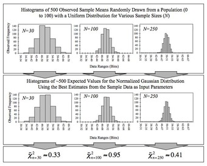{kind=link}
This figure demonstrates the central limit theorem. The sample means are generated using a random number generator, which draws numbers between 1 and 100 from a uniform probability distribution. It illustrates that increasing sample sizes result in the 500 measured sample means being more closely distributed about the population mean (50 in this case).
7.5. Errors in Sampling
7.5.1. Expected Value and Standard Error
Expected value and standard error can provide useful information about the data recorded in an experiment.
Learning Objective
Solve for the standard error of a sum and the expected value of a random variable
Key Points
- The expected value (or expectation, mathematical expectation, EV, mean, or first moment) of a random variable is the weighted average of all possible values that this random variable can take on.
- The expected value may be intuitively understood by the law of large numbers: the expected value, when it exists, is almost surely the limit of the sample mean as sample size grows to infinity.
- The standard error is the standard deviation of the sampling distribution of a statistic.
- The standard error of the sum represents how much one can expect the actual value of a repeated experiment to vary from the expected value of that experiment.
Key Terms
- standard deviation
- a measure of how spread out data values are around the mean, defined as the square root of the variance
- continuous random variable
- obtained from data that can take infinitely many values
- discrete random variable
- obtained by counting values for which there are no in-between values, such as the integers 0, 1, 2, ….
Expected Value
In probability theory, the expected value (or expectation, mathematical expectation, EV, mean, or first moment) of a random variable is the weighted average of all possible values that this random variable can take on. The weights used in computing this average are probabilities in the case of a discrete random variable, or values of a probability density function in the case of a continuous random variable.
The expected value may be intuitively understood by the law of large numbers: the expected value, when it exists, is almost surely the limit of the sample mean as sample size grows to infinity. More informally, it can be interpreted as the long-run average of the results of many independent repetitions of an experiment (e.g. a dice roll). The value may not be expected in the ordinary sense—the "expected value" itself may be unlikely or even impossible (such as having 2.5 children), as is also the case with the sample mean.
The expected value of a random variable can be calculated by summing together all the possible values with their weights (probabilities):
where $x$ represents a possible value and $p$ represents the probability of that possible value.
Standard Error
The standard error is the standard deviation of the sampling distribution of a statistic. For example, the sample mean is the usual estimator of a population mean. However, different samples drawn from that same population would in general have different values of the sample mean. The standard error of the mean (i.e., of using the sample mean as a method of estimating the population mean) is the standard deviation of those sample means over all possible samples of a given size drawn from the population.

This is a normal distribution curve that illustrates standard deviations. The likelihood of being further away from the mean diminishes quickly on both ends.
Expected Value and Standard Error of a Sum
Suppose there are five numbers in a box: 1, 1, 2, 3, and 4. If we were to selected one number from the box, the expected value would be:
Now, let's say we draw a number from the box 25 times (with replacement). The new expected value of the sum of the numbers can be calculated by the number of draws multiplied by the expected value of the box: $25\cdot 2.2 = 55$ . The standard error of the sum can be calculated by the square root of number of draws multiplied by the standard deviation of the box: $\sqrt{25} \cdot \text{SD of box} = 5\cdot 1.17 = 5.8$ . This means that if this experiment were to be repeated many times, we could expect the sum of 25 numbers chosen to be within 5.8 of the expected value of 55, either higher or lower.
7.5.2. Using the Normal Curve
The normal curve is used to find the probability that a value falls within a certain standard deviation away from the mean.
Learning Objective
Calculate the probability that a variable is within a certain range by finding its z-value and using the Normal curve
Key Points
- In order to use the normal curve to find probabilities, the observed value must first be standardized using the following formula: $z=\frac{x-\mu }{\sigma }$ .
- To calculate the probability that a variable is within a range, we have to find the area under the curve. Luckily, we have tables to make this process fairly easy.
- When reading the table, we must note that the leftmost column tells you how many sigmas above the the mean the value is to one decimal place (the tenths place), the top row gives the second decimal place (the hundredths), and the intersection of a row and column gives the probability.
- It is important to remember that the table only gives the probabilities to the left of the $z$ -value and that the normal curve is symmetrical.
- In a normal distribution, approximately 68% of values fall within one standard deviation of the mean, approximately 95% of values fall with two standard deviations of the mean, and approximately 99.7% of values fall within three standard of the mean.
Key Terms
- standard deviation
- a measure of how spread out data values are around the mean, defined as the square root of the variance
- z-value
- the standardized value of an observation found by subtracting the mean from the observed value, and then dividing that value by the standard deviation; also called
$z$ -score
$z$ -Value
The functional form for a normal distribution is a bit complicated. It can also be difficult to compare two variables if their mean and or standard deviations are different. For example, heights in centimeters and weights in kilograms, even if both variables can be described by a normal distribution. To get around both of these conflicts, we can define a new variable:
$\displaystyle z=\frac{x-\mu }{\sigma }$
This variable gives a measure of how far the variable is from the mean ($x-\mu$ ), then "normalizes" it by dividing by the standard deviation ($\sigma$ ). This new variable gives us a way of comparing different variables. The $z$ -value tells us how many standard deviations, or "how many sigmas", the variable is from its respective mean.
Areas Under the Curve
To calculate the probability that a variable is within a range, we have to find the area under the curve. Normally, this would mean we'd need to use calculus. However, statisticians have figured out an easier method, using tables, that can typically be found in your textbook or even on your calculator.
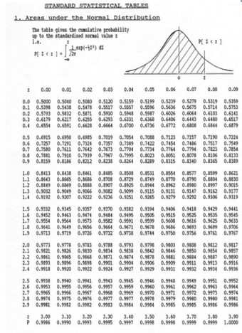{kind=link}
This table can be used to find the cumulative probability up to the standardized normal value $z$ .
These tables can be a bit intimidating, but you simply need to know how to read them. The leftmost column tells you how many sigmas above the the mean to one decimal place (the tenths place).The top row gives the second decimal place (the hundredths).The intersection of a row and column gives the probability.
For example, if we want to know the probability that a variable is no more than 0.51 sigmas above the mean, $P(z<0.51)$ , we look at the 6th row down (corresponding to 0.5) and the 2nd column (corresponding to 0.01). The intersection of the 6th row and 2nd column is 0.6950, which tells us that there is a 69.50% percent chance that a variable is less than 0.51 sigmas (or standard deviations) above the mean.
A common mistake is to look up a $z$ -value in the table and simply report the corresponding entry, regardless of whether the problem asks for the area to the left or to the right of the $z$ -value. The table only gives the probabilities to the left of the $z$ -value. Since the total area under the curve is 1, all we need to do is subtract the value found in the table from 1. For example, if we wanted to find out the probability that a variable is more than 0.51 sigmas above the mean, $P(z>0.51)$ , we just need to calculate $1-P(z<0.51) = 1-0.6950 = 0.3050$ , or 30.5%.
There is another note of caution to take into consideration when using the table: The table provided only gives values for positive $z$ -values, which correspond to values above the mean. What if we wished instead to find out the probability that a value falls below a $z$ -value of $-0.51$ , or 0.51 standard deviations below the mean? We must remember that the standard normal curve is symmetrical , meaning that $P(z<-0.51) = P(z>0.51)$ , which we calculated above to be 30.5%.
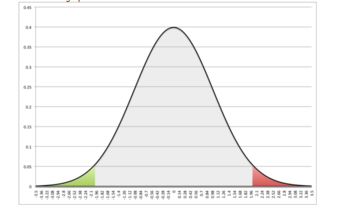{kind=link}
This images shows the symmetry of the normal curve. In this case, P(z2.01).
We may even wish to find the probability that a variable is between two z-values, such as between 0.50 and 1.50, or $P(0.50)$ .
68-95-99.7 Rule
Although we can always use the $z$ -score table to find probabilities, the 68-95-99.7 rule helps for quick calculations. In a normal distribution, approximately 68% of values fall within one standard deviation of the mean, approximately 95% of values fall with two standard deviations of the mean, and approximately 99.7% of values fall within three standard deviations of the mean.

Dark blue is less than one standard deviation away from the mean. For the normal distribution, this accounts for about 68% of the set, while two standard deviations from the mean (medium and dark blue) account for about 95%, and three standard deviations (light, medium, and dark blue) account for about 99.7%.
7.5.3. The Correction Factor
The expected value is a weighted average of all possible values in a data set.
Learning Objective
Recognize when the correction factor should be utilized when sampling
Key Points
- The expected value refers, intuitively, to the value of a random variable one would "expect" to find if one could repeat the random variable process an infinite number of times and take the average of the values obtained.
- The intuitive explanation of the expected value above is a consequence of the law of large numbers: the expected value, when it exists, is almost surely the limit of the sample mean as the sample size grows to infinity.
- From a rigorous theoretical standpoint, the expected value of a continuous variable is the integral of the random variable with respect to its probability measure.
- A positive value for r indicates a positive association between the variables, and a negative value indicates a negative association.
- Correlation does not necessarily imply causation.
Key Terms
- integral
- the limit of the sums computed in a process in which the domain of a function is divided into small subsets and a possibly nominal value of the function on each subset is multiplied by the measure of that subset, all these products then being summed
- random variable
- a quantity whose value is random and to which a probability distribution is assigned, such as the possible outcome of a roll of a die
- weighted average
- an arithmetic mean of values biased according to agreed weightings
In probability theory, the expected value refers, intuitively, to the value of a random variable one would "expect" to find if one could repeat the random variable process an infinite number of times and take the average of the values obtained. More formally, the expected value is a weighted average of all possible values. In other words, each possible value the random variable can assume is multiplied by its assigned weight, and the resulting products are then added together to find the expected value.
The weights used in computing this average are the probabilities in the case of a discrete random variable (that is, a random variable that can only take on a finite number of values, such as a roll of a pair of dice), or the values of a probability density function in the case of a continuous random variable (that is, a random variable that can assume a theoretically infinite number of values, such as the height of a person).
From a rigorous theoretical standpoint, the expected value of a continuous variable is the integral of the random variable with respect to its probability measure. Since probability can never be negative (although it can be zero), one can intuitively understand this as the area under the curve of the graph of the values of a random variable multiplied by the probability of that value. Thus, for a continuous random variable the expected value is the limit of the weighted sum, i.e. the integral.
Simple Example
Suppose we have a random variable X, which represents the number of girls in a family of three children. Without too much effort, you can compute the following probabilities:
The expected value of X, E[X], is computed as:
This calculation can be easily generalized to more complicated situations. Suppose that a rich uncle plans to give you \$2,000 for each child in your family, with a bonus of \$500 for each girl. The formula for the bonus is:
What is your expected bonus?
We could have calculated the same value by taking the expected number of children and plugging it into the equation:
Expected Value and the Law of Large Numbers
The intuitive explanation of the expected value above is a consequence of the law of large numbers: the expected value, when it exists, is almost surely the limit of the sample mean as the sample size grows to infinity. More informally, it can be interpreted as the long-run average of the results of many independent repetitions of an experiment (e.g. a dice roll). The value may not be expected in the ordinary sense—the "expected value" itself may be unlikely or even impossible (such as having 2.5 children), as is also the case with the sample mean.
Uses and Applications
To empirically estimate the expected value of a random variable, one repeatedly measures observations of the variable and computes the arithmetic mean of the results. If the expected value exists, this procedure estimates the true expected value in an unbiased manner and has the property of minimizing the sum of the squares of the residuals (the sum of the squared differences between the observations and the estimate). The law of large numbers demonstrates (under fairly mild conditions) that, as the size of the sample gets larger, the variance of this estimate gets smaller.
This property is often exploited in a wide variety of applications, including general problems of statistical estimation and machine learning, to estimate (probabilistic) quantities of interest via Monte Carlo methods.
The expected value plays important roles in a variety of contexts. In regression analysis, one desires a formula in terms of observed data that will give a "good" estimate of the parameter giving the effect of some explanatory variable upon a dependent variable. The formula will give different estimates using different samples of data, so the estimate it gives is itself a random variable. A formula is typically considered good in this context if it is an unbiased estimator—that is, if the expected value of the estimate (the average value it would give over an arbitrarily large number of separate samples) can be shown to equal the true value of the desired parameter.
In decision theory, and in particular in choice under uncertainty, an agent is described as making an optimal choice in the context of incomplete information. For risk neutral agents, the choice involves using the expected values of uncertain quantities, while for risk averse agents it involves maximizing the expected value of some objective function such as a von Neumann-Morgenstern utility function.
7.5.4. A Closer Look at the Gallup Poll
The Gallup Poll is an opinion poll that uses probability samples to try to accurately represent the attitudes and beliefs of a population.
Learning Objective
Examine the errors that can still arise in the probability samples chosen by Gallup
Key Points
- The Gallup Poll has transitioned over the years from polling people in their residences to using phone calls. Today, both landlines and cell phones are called, and are selected randomly using a technique called random digit dialing.
- Opinion polls like Gallup face problems such as nonresponse bias, response bias, undercoverage, and poor wording of questions.
- Contrary to popular belief, sample sizes as small as 1,000 can accurately represent the views of the general population within 4 percentage points, if chosen properly.
- To make sure that the sample is representative of the whole population, each respondent is assigned a weight so that demographic characteristics of the weighted sample match those of the entire population. Gallup weighs for gender, race, age, education, and region.
Key Terms
- probability sample
- a sample in which every unit in the population has a chance (greater than zero) of being selected in the sample, and this probability can be accurately determined
- nonresponse
- the absence of a response
- undercoverage
- Occurs when a survey fails to reach a certain portion of the population.
Overview of the Gallup Poll
The Gallup Poll is the division of Gallup, Inc. that regularly conducts public opinion polls in more than 140 countries around the world. Historically, the Gallup Poll has measured and tracked the public's attitudes concerning virtually every political, social, and economic issue of the day, including highly sensitive or controversial subjects. It is very well known when it comes to presidential election polls and is often referenced in the mass media as a reliable and objective audience measurement of public opinion. Its results, analyses, and videos are published daily on Gallup.com in the form of data-driven news. The poll has been around since 1935.
How Does Gallup Choose its Samples?
The Gallup Poll is an opinion poll that uses probability sampling. In a probability sample, each individual has an equal opportunity of being selected. This helps generate a sample that can represent the attitudes, opinions, and behaviors of the entire population.
In the United States, from 1935 to the mid-1980s, Gallup typically selected its sample by selecting residences from all geographic locations. Interviewers would go to the selected houses and ask whatever questions were included in that poll, such as who the interviewee was planning to vote for in an upcoming election .
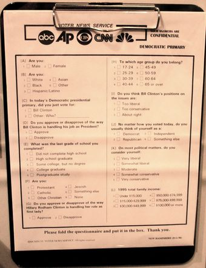{kind=link}
This questionnaire asks voters about their gender, income, religion, age, and political beliefs.
There were a number of problems associated with this method. First of all, it was expensive and inefficient. Over time, Gallup realized that it needed to come up with a more effective way to collect data rapidly. In addition, there was the problem of nonresponse. Certain people did not wish to answer the door to a stranger, or simply declined to answer the questions the interviewer asked.
In 1986, Gallup shifted most of its polling to the telephone. This provided a much quicker way to poll many people. In addition, it was less expensive because interviewers no longer had to travel all over the nation to go to someone's house. They simply had to make phone calls. To make sure that every person had an equal opportunity of being selected, Gallup used a technique called random digit dialing. A computer would randomly generate phone numbers found from telephone exchanges for the sample. This method prevented problems such as undercoverage, which could occur if Gallup had chosen to select numbers from a phone book (since not all numbers are listed). When a house was called, the person over eighteen with the most recent birthday would be the one to respond to the questions.
A major problem with this method arose in the mid-late 2000s, when the use of cell phones spiked. More and more people in the United States were switching to using only their cell phones over landline telephones. Now, Gallup polls people using a mix of landlines and cell phones. Some people claim that the ratio they use is incorrect, which could result in a higher percentage of error.
Sample Size and Error
A lot of people incorrectly assume that in order for a poll to be accurate, the sample size must be huge. In actuality, small sample sizes that are chosen well can accurately represent the entire population, with, of course, a margin of error. Gallup typically uses a sample size of 1,000 people for its polls. This results in a margin of error of about 4%. To make sure that the sample is representative of the whole population, each respondent is assigned a weight so that demographic characteristics of the weighted sample match those of the entire population (based on information from the US Census Bureau). Gallup weighs for gender, race, age, education, and region.
Potential for Inaccuracy
Despite all the work done to make sure a poll is accurate, there is room for error. Gallup still has to deal with the effects of nonresponse bias, because people may not answer their cell phones. Because of this selection bias, the characteristics of those who agree to be interviewed may be markedly different from those who decline. Response bias may also be a problem, which occurs when the answers given by respondents do not reflect their true beliefs. In addition, it is well established that the wording of the questions, the order in which they are asked, and the number and form of alternative answers offered can influence results of polls. Finally, there is still the problem of coverage bias. Although most people in the United States either own a home phone or a cell phone, some people do not (such as the homeless). These people can still vote, but their opinions would not be taken into account in the polls.
7.6. Sampling Examples
7.6.1. Measuring Unemployment
Labor force surveys are the most preferred method of measuring unemployment due to their comprehensive results and categories such as race and gender.
Learning Objective
Analyze how the United States measures unemployment
Key Points
- As defined by the International Labour Organization (ILO), "unemployed workers" are those who are currently not working but are willing and able to work for pay, currently available to work, and have actively searched for work.
- The unemployment rate is calculated as a percentage by dividing the number of unemployed individuals by all individuals currently in the labor force.
- Though many people care about the number of unemployed individuals, economists typically focus on the unemployment rate.
- In the U.S., the Current Population Survey (CPS) conducts a survey based on a sample of 60,000 households.
- The Current Employment Statistics survey (CES) conducts a survey based on a sample of 160,000 businesses and government agencies that represent 400,000 individual employers.
- The Bureau of Labor Statistics also calculates six alternate measures of unemployment, U1 through U6, that measure different aspects of unemployment.
Key Terms
- unemployment
- The level of joblessness in an economy, often measured as a percentage of the workforce.
- labor force
- The collective group of people who are available for employment, whether currently employed or unemployed (though sometimes only those unemployed people who are seeking work are included).
Unemployment, for the purposes of this atom, occurs when people are without work and actively seeking work. The unemployment rate is a measure of the prevalence of unemployment. It is calculated as a percentage by dividing the number of unemployed individuals by all individuals currently in the labor force.
Though many people care about the number of unemployed individuals, economists typically focus on the unemployment rate. This corrects for the normal increase in the number of people employed due to increases in population and increases in the labor force relative to the population.
As defined by the International Labour Organization (ILO), "unemployed workers" are those who are currently not working but willing and able to work for pay, those who are currently available to work, and those who have actively searched for work. Individuals who are actively seeking job placement must make the following efforts:
- be in contact with an employer
- have job interviews
- contact job placement agencies
- send out resumes
- submit applications
- respond to advertisements (or some other means of active job searching) within the prior four weeks
There are different ways national statistical agencies measure unemployment. These differences may limit the validity of international comparisons of unemployment data. To some degree, these differences remain despite national statistical agencies increasingly adopting the definition of unemployment by the International Labor Organization. To facilitate international comparisons, some organizations, such as the OECD, Eurostat, and International Labor Comparisons Program, adjust data on unemployment for comparability across countries.
The ILO describes 4 different methods to calculate the unemployment rate:
- Labor Force Sample Surveys are the most preferred method of unemployment rate calculation since they give the most comprehensive results and enable calculation of unemployment by different group categories such as race and gender. This method is the most internationally comparable.
- Official Estimates are determined by a combination of information from one or more of the other three methods. The use of this method has been declining in favor of labor surveys.
- Social Insurance Statistics, such as unemployment benefits, are computed base on the number of persons insured representing the total labor force and the number of persons who are insured that are collecting benefits. This method has been heavily criticized due to the expiration of benefits before the person finds work.
- Employment Office Statistics are the least effective, being that they only include a monthly tally of unemployed persons who enter employment offices. This method also includes unemployed who are not unemployed per the ILO definition.
Unemployment in the United States
The Bureau of Labor Statistics measures employment and unemployment (of those over 15 years of age) using two different labor force surveys conducted by the United States Census Bureau (within the United States Department of Commerce) and/or the Bureau of Labor Statistics (within the United States Department of Labor). These surveys gather employment statistics monthly. The Current Population Survey (CPS), or "Household Survey," conducts a survey based on a sample of 60,000 households. This survey measures the unemployment rate based on the ILO definition.
The Current Employment Statistics survey (CES), or "Payroll Survey", conducts a survey based on a sample of 160,000 businesses and government agencies that represent 400,000 individual employers. This survey measures only civilian nonagricultural employment; thus, it does not calculate an unemployment rate, and it differs from the ILO unemployment rate definition.
These two sources have different classification criteria and usually produce differing results. Additional data are also available from the government, such as the unemployment insurance weekly claims report available from the Office of Workforce Security, within the U.S. Department of Labor Employment & Training Administration.
The Bureau of Labor Statistics also calculates six alternate measures of unemployment, U1 through U6 (as diagramed in ), that measure different aspects of unemployment:
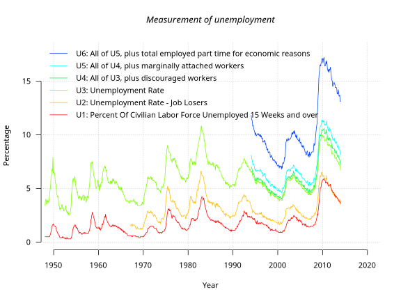{kind=link}
U1–U6 from 1950–2010, as reported by the Bureau of Labor Statistics.
- U1: Percentage of labor force unemployed 15 weeks or longer.
- U2: Percentage of labor force who lost jobs or completed temporary work.
- U3: Official unemployment rate per the ILO definition occurs when people are without jobs and they have actively looked for work within the past four weeks.
- U4: U3 + "discouraged workers", or those who have stopped looking for work because current economic conditions make them believe that no work is available for them.
- U5: U4 + other "marginally attached workers," "loosely attached workers," or those who "would like" and are able to work, but have not looked for work recently.
- U6: U5 + Part-time workers who want to work full-time, but cannot due to economic reasons (underemployment).
7.6.2. Chance Models in Genetics
Gregor Mendel's work on genetics acted as a proof that application of statistics to inheritance could be highly useful.
Learning Objective
Examine the presence of chance models in genetics
Key Points
- In breeding experiments between 1856 and 1865, Gregor Mendel first traced inheritance patterns of certain traits in pea plants and showed that they obeyed simple statistical rules.
- Mendel conceived the idea of heredity units, which he called "factors," one of which is a recessive characteristic, and the other of which is dominant.
- Mendel found that recessive traits not visible in first generation hybrid seeds reappeared in the second, but the dominant traits outnumbered the recessive by a ratio of 3:1.
- Genetical theory has developed largely due to the use of chance models featuring randomized draws, such as pairs of chromosomes.
Key Terms
- chi-squared test
- In probability theory and statistics, refers to a test in which the chi-squared distribution (also chi-square or χ-distribution) with k degrees of freedom is the distribution of a sum of the squares of k independent standard normal random variables.
- gene
- a unit of heredity; a segment of DNA or RNA that is transmitted from one generation to the next, and that carries genetic information such as the sequence of amino acids for a protein
- chromosome
- A structure in the cell nucleus that contains DNA, histone protein, and other structural proteins.
Gregor Mendel is known as the "father of modern genetics. " In breeding experiments between 1856 and 1865, Gregor Mendel first traced inheritance patterns of certain traits in pea plants and showed that they obeyed simple statistical rules. Although not all features show these patterns of "Mendelian Inheritance," his work served as a proof that application of statistics to inheritance could be highly useful. Since that time, many more complex forms of inheritance have been demonstrated.
In 1865, Mendel wrote the paper Experiments on Plant Hybridization. Mendel read his paper to the Natural History Society of Brünn on February 8 and March 8, 1865. It was published in the Proceedings of the Natural History Society of Brünn the following year. In his paper, Mendel compared seven discrete characters (as diagramed in ):

This diagram shows the seven genetic "characters" observed by Mendel.
- color and smoothness of the seeds (yellow and round or green and wrinkled)
- color of the cotyledons (yellow or green)
- color of the flowers (white or violet)
- shape of the pods (full or constricted)
- color of unripe pods (yellow or green)
- position of flowers and pods on the stems
- height of the plants (short or tall)
Mendel's work received little attention from the scientific community and was largely forgotten. It was not until the early 20th century that Mendel's work was rediscovered, and his ideas used to help form the modern synthesis.
The Experiment
Mendel discovered that when crossing purebred white flower and purple flower plants, the result is not a blend. Rather than being a mixture of the two plants, the offspring was purple-flowered. He then conceived the idea of heredity units, which he called "factors", one of which is a recessive characteristic and the other of which is dominant. Mendel said that factors, later called genes, normally occur in pairs in ordinary body cells, yet segregate during the formation of sex cells. Each member of the pair becomes part of the separate sex cell. The dominant gene, such as the purple flower in Mendel's plants, will hide the recessive gene, the white flower.
When Mendel grew his first generation hybrid seeds into first generation hybrid plants, he proceeded to cross these hybrid plants with themselves, creating second generation hybrid seeds. He found that recessive traits not visible in the first generation reappeared in the second, but the dominant traits outnumbered the recessive by a ratio of 3:1.
After Mendel self-fertilized the F1 generation and obtained the 3:1 ratio, he correctly theorized that genes can be paired in three different ways for each trait: AA, aa, and Aa. The capital "A" represents the dominant factor and lowercase "a" represents the recessive. Mendel stated that each individual has two factors for each trait, one from each parent. The two factors may or may not contain the same information. If the two factors are identical, the individual is called homozygous for the trait. If the two factors have different information, the individual is called heterozygous. The alternative forms of a factor are called alleles. The genotype of an individual is made up of the many alleles it possesses.
An individual possesses two alleles for each trait; one allele is given by the female parent and the other by the male parent. They are passed on when an individual matures and produces gametes: egg and sperm. When gametes form, the paired alleles separate randomly so that each gamete receives a copy of one of the two alleles. The presence of an allele does not mean that the trait will be expressed in the individual that possesses it. In heterozygous individuals, the allele that is expressed is the dominant. The recessive allele is present but its expression is hidden
Relation to Statistics
The upshot is that Mendel observed the presence of chance in relation to which gene-pairs a seed would get. Because the number of pollen grains is large in comparison to the number of seeds, the selection of gene-pairs is essentially independent. Therefore, the second generation hybrid seeds are determined in a way similar to a series of draws from a data set, with replacement. Mendel's interpretation of the hereditary chain was based on this sort of statistical evidence.
In 1936, the statistician R.A. Fisher used a chi-squared test to analyze Mendel's data, and concluded that Mendel's results with the predicted ratios were far too perfect; this indicated that adjustments (intentional or unconscious) had been made to the data to make the observations fit the hypothesis. However, later authors have claimed Fisher's analysis was flawed, proposing various statistical and botanical explanations for Mendel's numbers. It is also possible that Mendel's results were "too good" merely because he reported the best subset of his data — Mendel mentioned in his paper that the data was from a subset of his experiments.
In summary, the field of genetics has become one of the most fulfilling arenas in which to apply statistical methods. Genetical theory has developed largely due to the use of chance models featuring randomized draws, such as pairs of chromosomes.